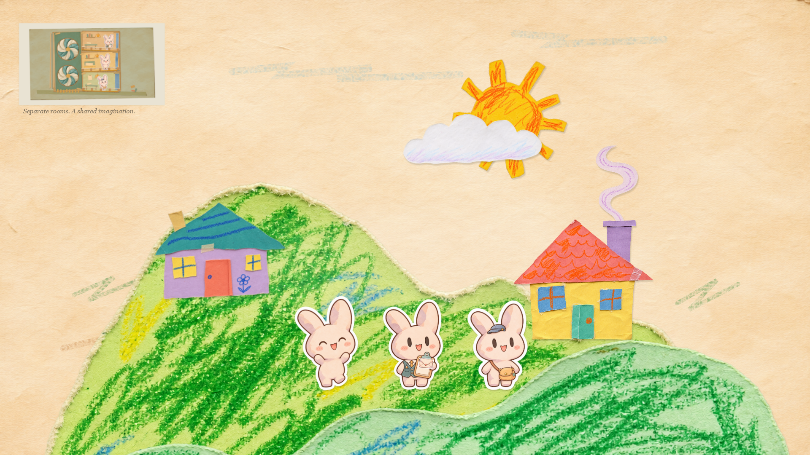
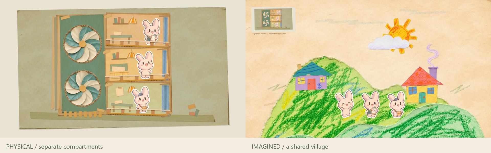
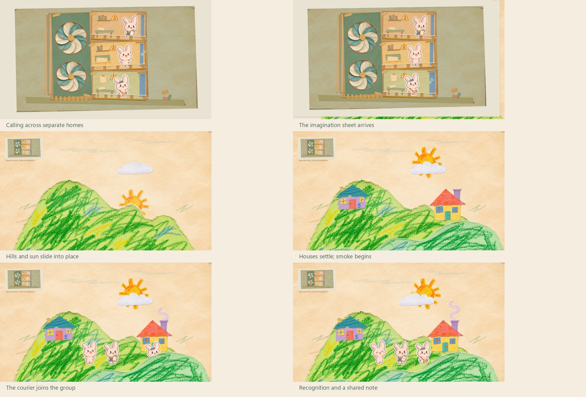
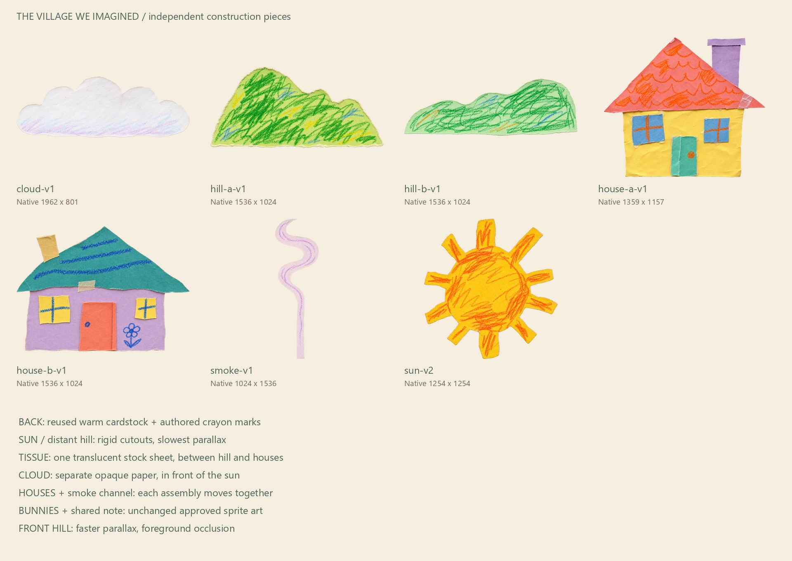

A 14-second provisional, silent paper-animation study. The physical homes remain separate; the village expresses the experience of belonging. New village artwork awaits human approval.




Independent review · Reproduction and provenance · Measured QA